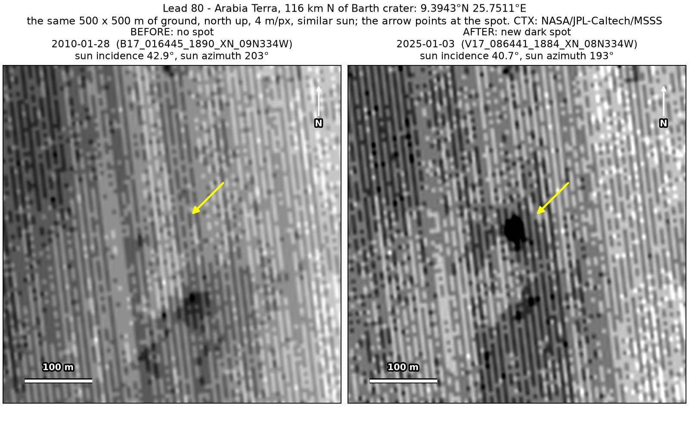
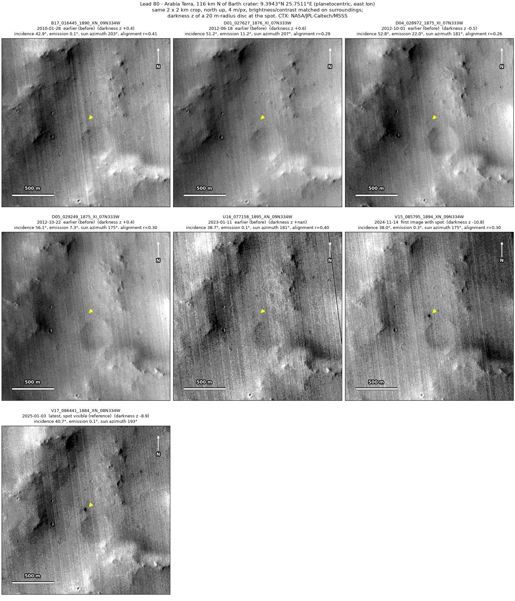
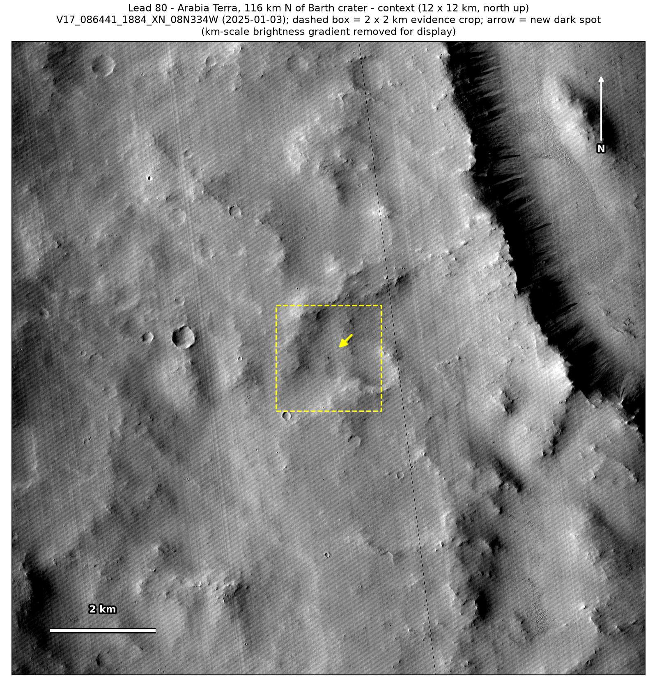
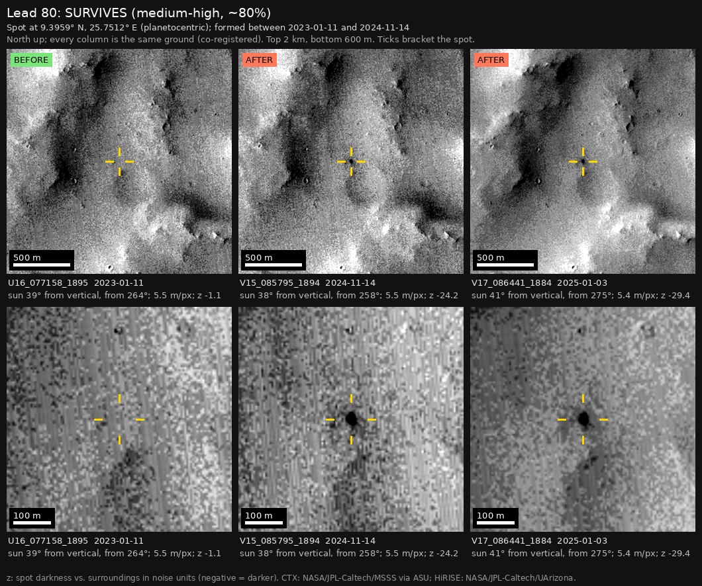

Professor of Mathematics
Paata Ivanisvili
Department of Mathematics, University of California, Irvine

← Possible new impact sites on Mars
Candidate 80: Arabia Terra, 116 km north of Barth crater
Strong · roughly 80%

What changed. A small, compact dark spot about 25 m across appeared on smooth ground in Arabia Terra, 116 km north of Barth crater, between January 2023 and November 2024, in two CTX images from two orbits seven weeks apart.
Why it may be a new impact. Five earlier images, from 2010 to January 2023, show no spot there; the January 2023 image was taken under the same sun as the November 2024 one, and the January 2010 image under nearly the same sun as the January 2025 one. A dark blob 100 m to the south was there all along, but the aligned before-and-after difference changes most at the spot, and a compact new dark spot is how the blast zone of a small new crater looks.
- Location
- 9.394° N, 25.751° E
- Absent
- 28 January 2010, 18 June 2012, 1 October 2012, 22 October 2012 and 11 January 2023
- Present
- 14 November 2024 and 3 January 2025
- Size
- Compact dark spot about 25 m across (22 × 28 m in the November 2024 image, 20 × 28 m in the January 2025 one)
- Confidence
- Strong candidate: roughly 80% likely to be a new impact.
- Caveat
- At about 25 m the spot is only four or five pixels across, so its shape is poorly resolved. It has been followed for only seven weeks, so a dust devil that stalled is not excluded; dark material moved by wind into a small round patch on smooth ground would be unusual and would have had to stay unchanged for those seven weeks. The earlier images line up only moderately well, and there is no dark feature like the spot within 300 m to serve as a check. No image from the high-resolution HiRISE camera covers it; the nearest ends 17.9 km away. Like every candidate here, it is unconfirmed: see the caveat.


